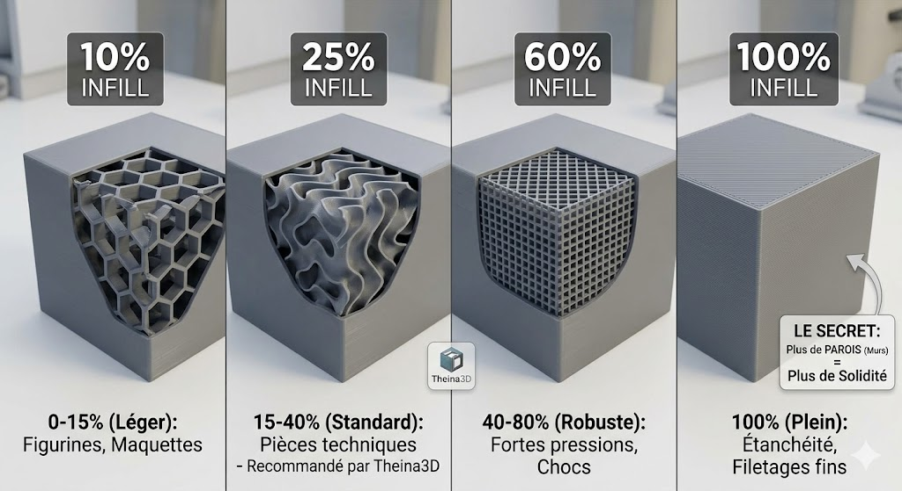

L'un des avantages majeurs de l'impression 3D FDM est de pouvoir décider de ce qu'il se passe à l'intérieur de l'objet. Contrairement au moulage traditionnel, une pièce 3D n'a pas besoin d'être pleine pour être extrêmement robuste.
Le remplissage (ou Infill) est cette structure interne qui soutient les parois de votre pièce. Bien le choisir, c'est économiser du temps et de la matière tout en garantissant que votre pièce ne cassera pas au premier effort. C'est ici que l'ingénierie rencontre l'économie de ressources.
I. La Densité : Quel pourcentage choisir ?
Le taux de remplissage définit la quantité de plastique à l'intérieur. Voici nos recommandations selon l'usage :
Usage Visuel (5% - 15%)
Idéal pour les figurines, maquettes et objets de décoration. Gain de temps et d'argent maximum.
Usage Technique (20% - 40%)
Le standard industriel. Offre le meilleur compromis entre légèreté et résistance mécanique.
II. Les Motifs : La géométrie au service de la force
Tous les motifs de remplissage ne se valent pas. Selon la direction des forces appliquées, la structure interne doit s'adapter :
| Motif | Propriété principale | Idéal pour... |
|---|---|---|
| Grille | Vitesse d'impression | Objets simples et rapides |
| Gyroïde | Force multidirectionnelle | Pièces techniques complexes |
| Nid d'abeille | Compression verticale | Supports lourds |
| Lightning | Économie de matière | Grandes pièces décoratives |
III. La règle d'or : Parois vs Remplissage
C'est l'erreur la plus commune : penser qu'une pièce à 100% de remplissage est forcément la plus solide. En réalité, ajouter des parois (murs) est souvent bien plus efficace.
L'astuce de Theina3D
Pour vos pièces mécaniques, nous privilégions le motif Gyroïde. Pourquoi ? Parce qu'il offre une résistance égale dans toutes les directions (X, Y et Z) et qu'il évite les vibrations de la machine à haute vitesse.
Un besoin de haute performance ?
Nos experts paramètrent chaque fichier pour maximiser la durabilité de vos projets techniques.